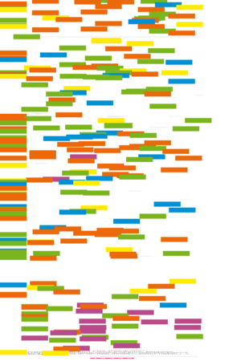
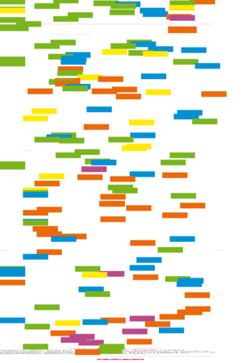
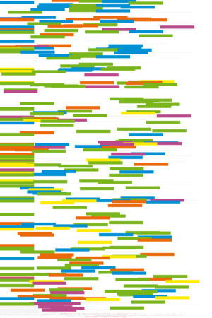

| About IR |
| Editors |
| Author instructions |
| Copyright |
| Author index |
| Subject index |
| Search |
| Reviews |
| Register |
| Home |

Volume 1 No 2 December 1995
Information Research: an electronic journal, is published three times a year by Professor T.D. Wilson of the Department of Information Studies, University of Sheffield.
Contents
 Introduction
Introduction
A Selective Review Of Knowledge-Based Approaches To Database Design
Shahrul Azman Noah and Michael Lloyd-Williams
Information And Business Performance:
A Study Of Information Systems And Services In High-Performing Companies
Ian Owens, Tom Wilson and Angela Abell
Business use of the World-Wide Web
Claire Cockburn and Tom Wilson
Introduction
This second issue of Information Research, the electronic version of Information Research News contains three papers. Database design plays an important part in both the teaching and the research programmes of the Department, and the first paper provides an overview of some of the new, knowledge-based approaches that are being developed to assist a designer by, for example, providing advice or suggesting alternative solutions. The work presented here is part of an ongoing doctoral study in this area. The second paper reports the principal results of an investigation into the relationship between information handling and business performance. A case-study approach of twelve high-performing companies demonstrates the increasing importance attached to information management in such companies and also provides a model that may be of use to subsequent workers in this field. Finally, given the current interest in the World-Wide Web and its impact on business, the third paper is particularly timely. It reports on surveys of business users of the WWW and on the key issues that must be faced to make the Internet more "business-friendly".
The issue is completed by a list of all of the MA and MSc dissertations produced during the final semester of their one-year programmes by the students on our 1994/95 taught-course programmes. Most of these dissertations are available for loan on request from the Department.
As this is an experimental electronic journal, it will not surpise readers that there are slight changes. The main change is that there is no attempt to provide backward links from the bibliographies to the relevant point in the text. Netscape's "Back" button serves the same purpose and takes away the need to do all that editing. The variation in citation practice continues, since the papers are generally early versions of papers for print publication, and publishing styles continue to vary.
Information Research is designed, maintained and published by by Professor Tom Wilson. Design and editorial content © T.D. Wilson, 1995